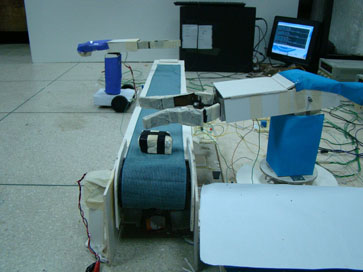
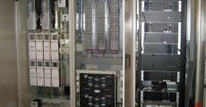
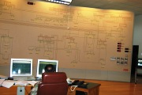
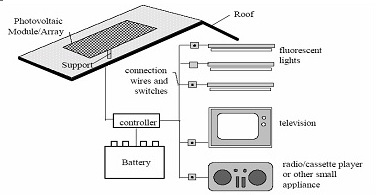

COMPLETED PROJECTS
Automatic Solar Hot Water System with Additional Storage Tank
This project is aimed to incorporate solar energy which would allow the user to attain hot water in an efficient and cheap manner. This automated system would allow the user to get hot water from the solar water heater as long as the solar water heater can supply hot water above a set temperature. If the solar water heater is unable to supply water above the set temperature, then only will the electric water heater come into action.
There is an immense potential for the use of solar PV technology in Bangladesh. Solar is a very good option for harnessing energy without affecting any environmental damage. Also due to the lack of natural energy resources like fossil fuel and natural gas we are nearly running sort of sufficient power generation. The world is drawing its attention toward solar energy. Bangladesh is also continuing its efforts for harnessing its solar power for reaching electricity in urban areas. The application of solar energy is increasing day by day. Hot water system using solar energy can be a very good application. As of today hot water is needed in different places like hospitals, hotels, and pharmaceuticals. In hospital hot water usually use for sterilization and wash laundry and for hotel they need hot water for cooking, commercial wash .It is a daily basis need. Source of energy to produce this hot water come solely form electrical power which consumes a lot of energy and lot of money. But if the system is developed using solar power and we can develop a control system which takes energy from the solar cell which can produce water at certain temperature and also whenever solar cell cannot maintain that temperature needed it can switch the whole system to electrical power for producing hot water. By this way we can save energy and also can reduce the cost compare to the present available system.

Alternative Solar Water Heater project has been developed for ENERGYPAC Bangladesh. We have already completed making the controller and this unit is under testing in ENERGYPAC facility.
Click To Watch Demonstration of Automatic Solar Hot Water System.
Improvement of Efficiency for Solar Photovoltaic Cell Applications
Renewable energy solution has achieved a great demand today to meet the energy crisis prevailing everywhere. Solar energy is rapidly gaining its popularity as an important source of this renewable energy. In order to obtain the maximum output from this solar cell it should be ensured that the solar panel is getting maximum light intensity from the sun which is only possible if the solar panel can be kept orthogonal with the sun position. So a model of automatic sun tracking system was designed to improve the output power of the solar panel. The proposed methodology has been tested for different parameters such as current-voltage characteristics of the panel, effect of shadows on the panel and also comparison has been shown for two different types of panel (3 watt and 50 watt panel) to verify the output power improvement of the movable photovoltaic array compared to the fixed array.
Click To Watch Demonstration of 2 Axis Automatic Solar Tracker.
A Multitasking PC Based Robotic Arm Manipulator Control System in RT-Linux Environment

Every year, notable amount of works get injured because of working in hazardous environments. Keeping these in mind, two projects on robotic arm manipulators were implemented in BRAC University. The concepts developed in these projects are believed to be efficient than human workers and can work in dangerous conditions without any risk of life.The two projects includes one with independent mobile robotic arm manipulator which will execute the command which is built within the microcontroller of it’s circuit and the other which consists of an independent mobile robotic arm and another arm controlled by Linux.The mobile robotic arm manipulator was build for industries, which require movable arms to carry heavy loads from one place to another. This arm is programmable where the program is downloaded in the microcontroller.The multitasking arm manipulator, as mentioned earlier, consists of a mobile arm manipulator for carrying objects from one place to another and the other arm is an stationary one which is controlled by RT Linux for transporting or assembling objects within a limited radius.
Click To Watch The Robotic Arm Industrial Video.
Click To Watch Robot Playing Hockey.
A New Approach to Improve the Reliability of DPDC SCADA Communication Systems

Supervisory Control and Data Acquisition (SCADA) is used broadly to portray control and management solutions in a wide range of industries. SCADA system failure may lead to disastrous consequences since the health and the safety of the public as the economic viability of the community it serves depends on it. After its introduction in DPDC over a decade ago, the SCADA system hardly had any performance up gradation. Currently the microwave link in SCADA Communication is observing problems that are rendering the entire structure obsolete. This paper revises the possibility to implement a new communication technology and proposes Free Space Optical (FSO) Communication to enhance SCADA system reliability. FSO refers to the transmission of modulated visible or infrared (IR) beams through the air to obtain optical communication. Like optical fiber, FSO also uses lasers to transmit data, but instead of enclosing the data stream in a glass fiber, the data is transmitted through the air. It is a secure, cost-effective alternative to other wireless connectivity options.
Performance Improvement of DPDC SCADA System Using Hard Real-Time OS

Supervisory Control And Data Acquisition SCADA system is extensively used in power systems specifically for monitoring different power parameters, operating and controlling power electronics as well as other high voltage elements. SCADA system failure can be an outcome of inevitable consequences which include equipment damage, customer load losses even life losses. Dhaka Power Distribution Company Ltd. (DPDC) former DESA has been using SCADA over a decade which was developed by ABB. At the early stage ABB came across some limitations which later on were solved in such a way that may not convene the time precision that present technological development demands. ABB used soft real time operating system UNIX. This OS usually responses with high latency which sometimes caused some remote power elements to fail in certain time frame. Evaluating these consequences, the research indicated some draw backs of current DPDC, SCADA system and proposed Hard RT Linux as an operating system of current DPDC SCADA to provide the appropriate level of reliability of the SCADA system.
Performance Analysis of BRAC Solar Project

Bangladesh is a country, where the people in the remote rural areas have to rely on fuel basically kerosene based lighting to bring minimal lighting services in their homes. The replacement of fuel based lighting can be done in a sustainable way by using the existing and environmentally friendly renewable energy sources like solar PV technology. This sustainable way of lighting many villages in Bangladesh is expected to improve the general living standard of the communities, contributing significantly to health, education. To provide electricity in the rural areas BRAC Solar Energy Program is initiated under BRAC foundation in 1998. In this study we emphasized on the performance of BRAC Solar Energy Program.
Performance Comparison Of CPLD And PLD Based Traffic Light Control System
PLD and CPLD has been extensively used for custom made circuits. That is why they are perfect for designing traffic light control systems. This project represents the performance comparison of a traffic light control system designed on GAL (Generic Array Logic) using Programmable Logic Device (PLD) and on FPGA (Field Programmable Gate Array) using Complex Programmable Logic Device (CPLD). For our PLD implementation, we have considered GAL (16V8) chips, which can be reprogrammed and erased. For the CPLD implementation, we have considered FPGA (Altera's Flex 10k family's EPF10K10TC144-4) chip, which is a 144 pin SRAM. The CPLD design was developed using the CPLD programming software MAX PLUS2 v 9.23. The traffic light controller consists of traffic signals (Red, Yellow/Amber & Green). We have designed the traffic controller using both CPLD and PLD. Then we have taken the real time waveform as well as the simulated waveform for different frequencies. The Digital Storage Oscilloscope (DSO).was used to generate the real time wave from the traffic controllers. The results from the real time waveform clearly illustrates that CPLD has the better performance over the PLD technology. Further more we have designed complex circuits for automated detection of railway crossing and A Five road junction ontrolling Traffic light system.
Click To Watch Demonstration of Traffic Light Control System Implemented by FPGA.
Click To Watch Animation of Proposed Traffic Light Control System for Mohakhali Junction.